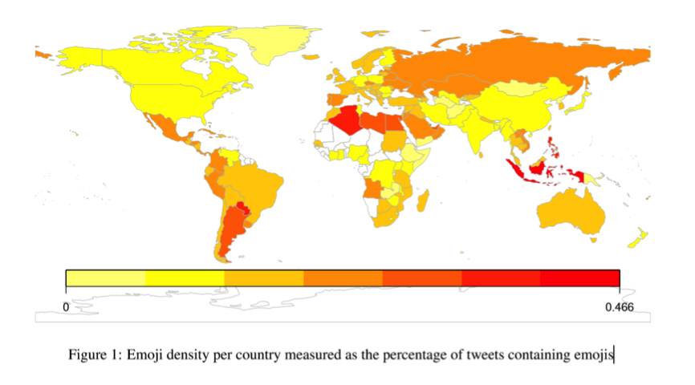
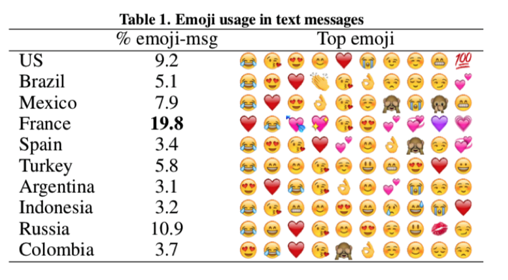
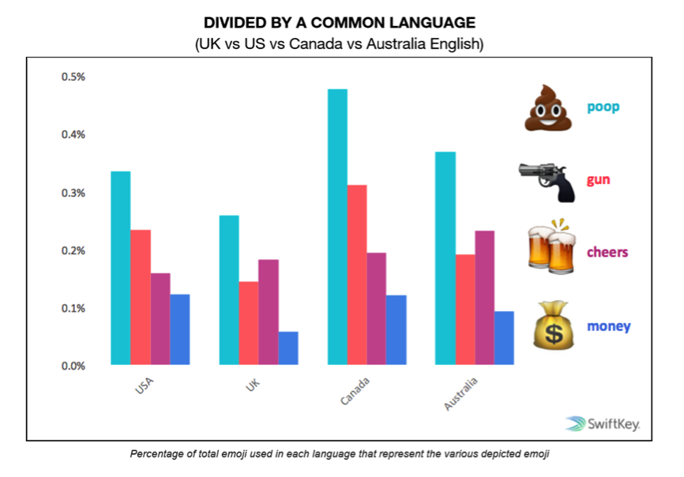
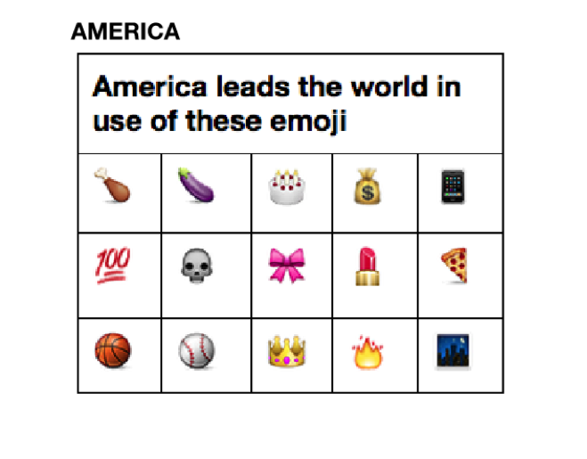

世界各国使用整体频次

In this subsection we investigate the popularity of emojis on a per-country basis. We quantify the emoji popularity in a specific country by calculating the percentage of geo-encoded tweets that contain emojis. By calculating the percentage of the tweets containing emojis, and not the overall amount of the emojis produced on Twitter, we neutralize the differences in popularity of Twitter among different countries.
以十个不同类型的国家为例，他们常用的表情包前十位也存在很多差距。
这只是各国使用热度最高的表情包的区别。事实上，在更多常用emoji表情中，很多国家甚至颠覆了人们的传统认知。
调查显示，加拿大人最爱传送关于枪支暴力和金钱的表情符号，这些本来都被认为是美国人最热爱的东西却在表情符号的世界里被加拿大人统统抢了过去。另外，他们也是最爱发“poop” 这个表情的英语语系国家。
类似地，与很多人的认识相背离的是，最喜欢嗑药表情的竟然不是美国而是澳大利亚。
DRUGS ● Australian English speakers use drug emoji (incl. cigarettes) 65% more than average, with .17%. The pills emoji is their most popular drug emoji. ○ Average: .11% ○ US is slightly below average for use of drug emoji - .08% ○ Least: French at .07% ○ Mushroom emoji are used most by Arabic speakers; needles are used most in Vietnamese (nearly 3X the average) ○ Vietnamese doesn’t register for cigarettes (0%)
既然如此，美国人更喜欢怎样的emoji表情包呢？
其实，这个国家让这个在10亿个表情符号研究基础上得出的报告崩溃了，因为谁也不知道他们到底最爱什么。那就是美国，因为他们很博爱，什么都喜欢，而这些喜好又都不属于一类，从鸡腿到茄子，什么都有。
让我们来看看不专一的美国人都在什么领域引领了风骚：
那么，刚捧起大力神杯的法国又有怎样的emoji使用偏好呢？

HEARTS ● French speakers use heart emoji more than 4X the average, and 3X+ more than the next most ‘heart-y’ language; 55% of emojis sent in French are hearts ( vs 8% in US English and US Spanish). French is the only language for which the leading emoji category is not happy faces. ○ Average: 12.5% ○ Least: Malaysian, 4.8%
最后留个悬念，你认为最爱发“睡觉”这个表情包的是哪个国家的人呢？